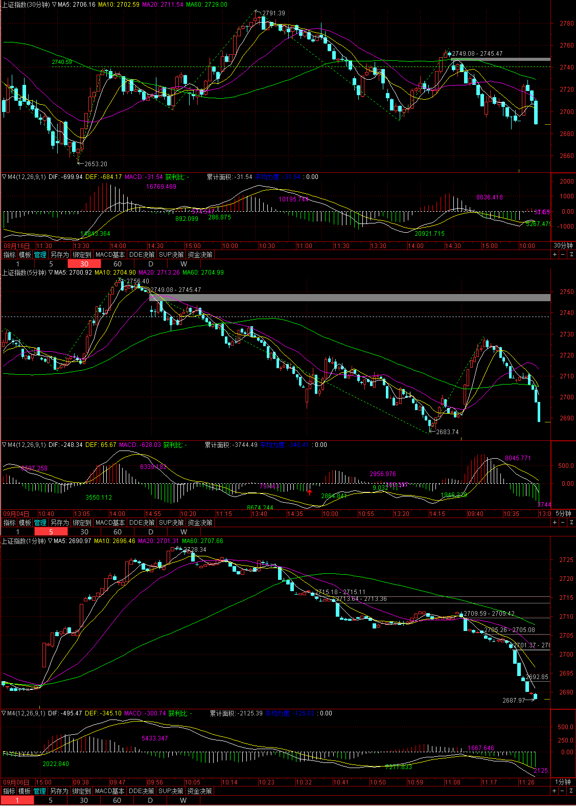
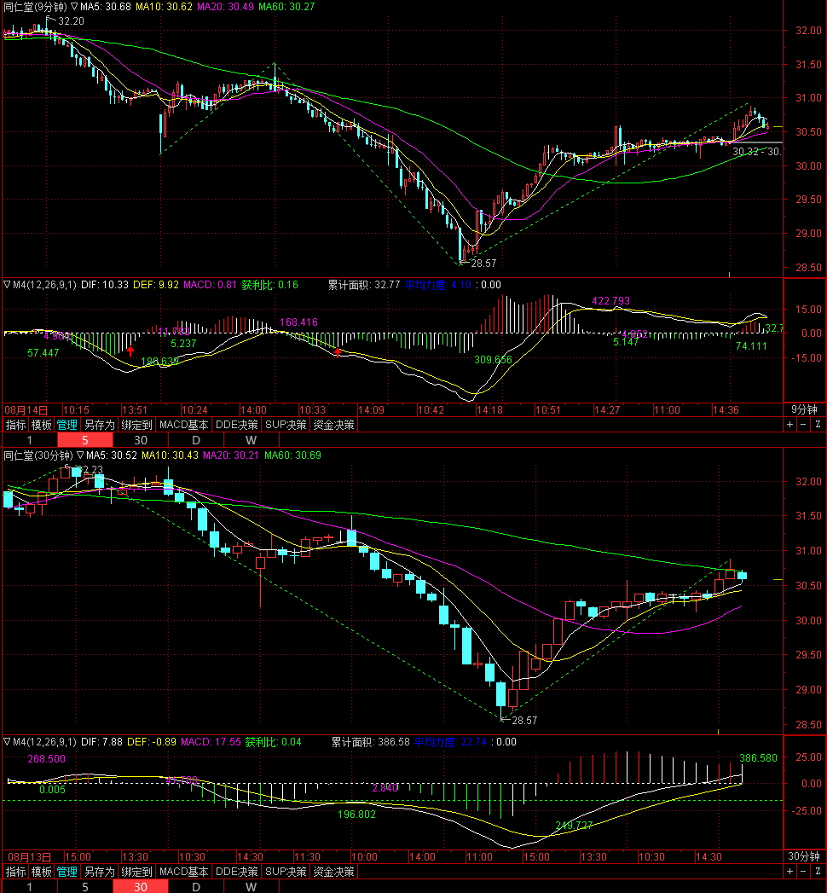
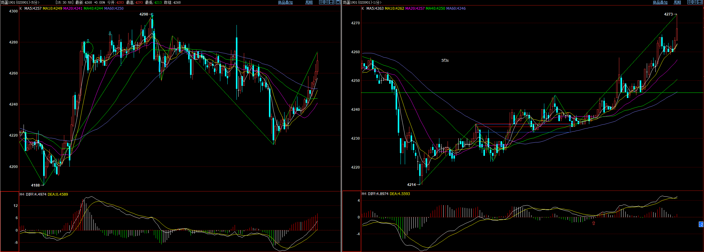
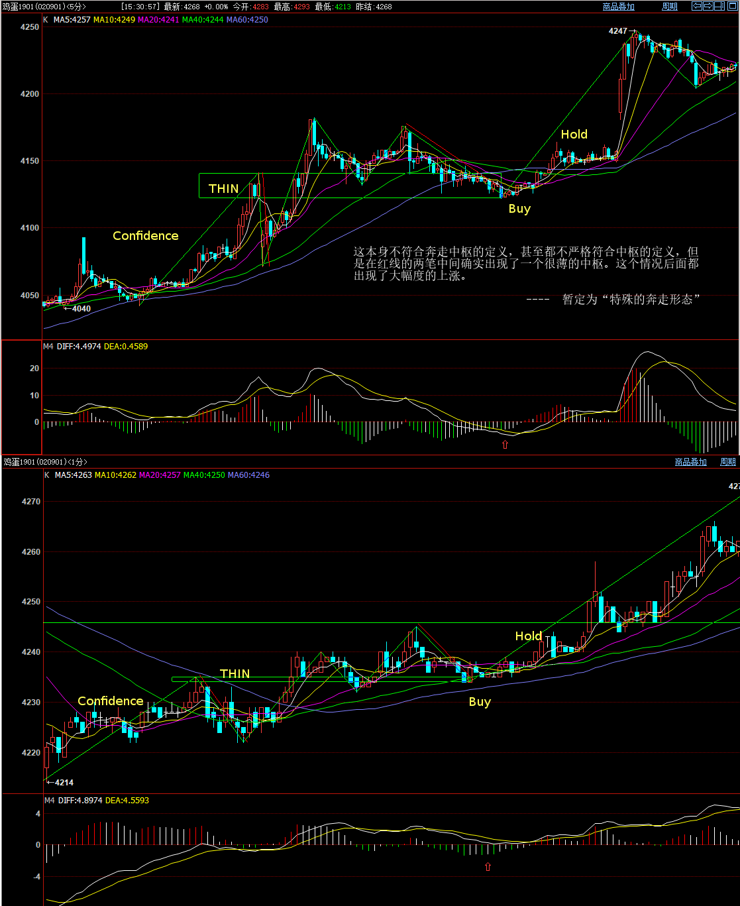
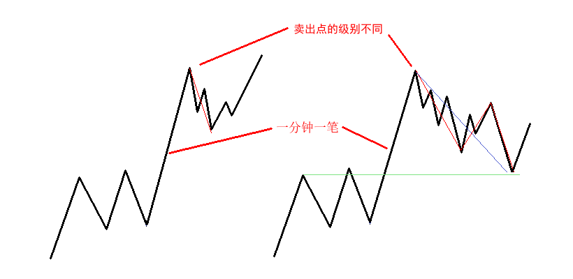
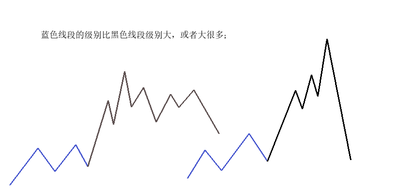
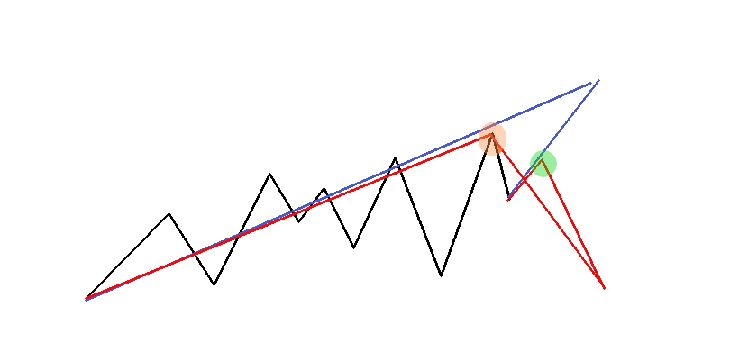
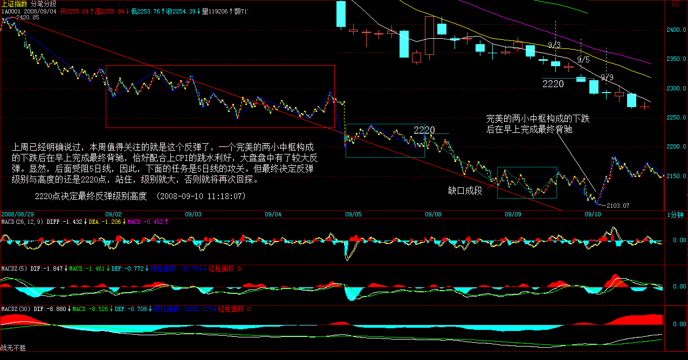
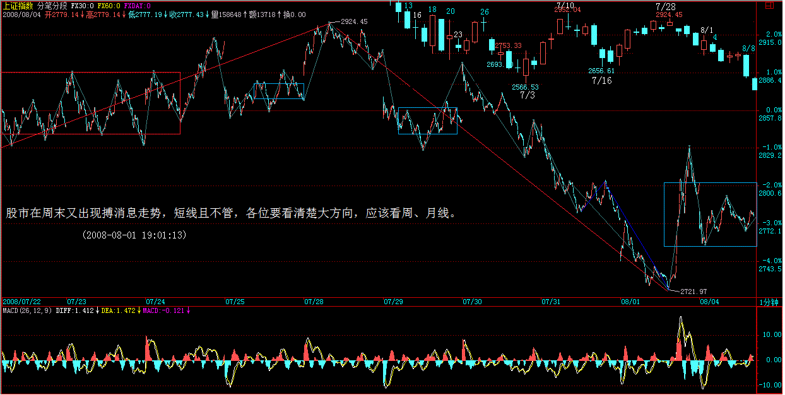

级别是最总要的《缠论》概念，由于原文描述不清晰，又经常以笔画中枢，导致对于级别的称呼和原文的称呼混乱，所以在读第三遍《缠论》时，再次总结，期望同意术语。
级别术语
中枢的级别
走势级别
走势级别是指我们看到的不同周期的走势图，如1分钟K线图，5分钟K线图，30分钟K线图等等。
走势类型的级别
20180907的大盘走势出现大小级别重叠的分析：
小级别走势延申，形成大小级别重叠的操作方法：

more ...注意观察均线的对应关系并没有背驰，相反越来越大。历史同日大盘, 大盘反转，带动此同仁堂V型反转。

5 分钟的V型反转始于1分钟奔走心态

特殊的奔走，Buy点买入，在Hold中坚持持仓，不止盈。

300155 0 安居宝
300162 0 雷曼股份
603380 0 易德龙
300144 0 中光防雷
600563 0 法拉电子
002859 0 洁美科技
002587 0 奥拓电子
603633 0 徕木股份
002446 0 兴森科技
002402 0 和而泰
300390 0 天华超净
300351 0 永贵电器
600980 0 北矿科技
600363 0 联合光电
300686 0 智能动力
300689 0 …通达信复权模型是建立在”股东财富不变”的原则上的。
交易所依据”股东财富不变”原则制定除权除息报价计算公式,目前沪深交易所除权除息报价的基本公式如下(在具体操作中可能会有所变动): 除权(息)报价＝[(前收盘价-现金红利)＋配(新)股价格×流通股份变动比例]÷(1＋流通股份变动比例)
通达信复权分为向前复权和向后复权: 向前复权,就是保持现有价位不变,将以前的价格缩减,将除权前的K线向下平移,使图形吻合,保持股价走势的连续性。 向后复权,就是保持先前的价格不变,而将以后的价格增加。上面的例子采用的就是向后复权。 两者最明显的区别在于向前复权的当前周期报价和K线显示价格完全一致,而向后复权的报价大多低于K线显示价格。例如,某只股票当前价格10元,在这之前曾经每10股送10股,前者除权后的价格仍是10元,后者则为20元。
复权是根据上市公司的权益分派、公积金转增股本、配股等情况和交易所的除权报价方案精确计算复权价格。其计算公式:
前复权:复权后价格＝[(复权前价格-现金红利)＋配(新)股价格×流通股份变动比例]÷(1＋流通股份变动比例) 后复权 …
more ...
| 指数名称,操作代码,指数名称,操作代码,指数名称,操作代码,指数名称,操作代码 |
|---|
| 基金重仓,880801,QFII重仓,880802,券商重仓,880803 |
| 大盘股,880821,中盘股,880822,小盘股,880823 |
| 低市盈率,880828,中市盈率,880828,高市盈率,880827 |
| 行业龙头,880847,活跃股指,880837 |
| 绩优股,880835,微利股,880834,预计扭亏,880844,业绩预升,880843 |
| 中字头,880853,两年新股,880870 |
| 定增预案,880850,定增获准,880855, 定增实施,880856 … |
中枢从大看小，还是从小看大 中枢的定义是指次级别三段走势重叠。缠师在操作角度上看中枢是从小到大，这有实战意义。在一个级别的图中，可以看到本笔之上的两个级别。
在1F图上，可以直观的看清30F的一笔；
操作30F的一笔，从1F图中看更加清晰；
级别动态变化处理：
 

more ...(1) python2
brew install python
then ~/.bashrc
PATH=/usr/local/bin::$PATH
then 退出，在重新进入 iterm2
(2) virtualenv
pip install virtualenv
### 建立virtualenvs
```bash
mkdir .virtualenvs
cd .virtualenvs
virtualenv -p python vnpy
export WORKON_HOME=~/.virtualenvs
source ~/.virtualenvs/vnpy/bin/activate
pip install virtualenvwrapper
source ~/.virtualenvs/vnpy …原文网址：http://blog.sina.com.cn/s/blog_486e105c0100af99.html
下午收盘就要走。所以先说两句。
上周已经明确说过，本周值得关注的就是这个反弹了，一个完美的两小中枢构成的下跌后在早上完成最终背驰，恰好配合上CPI的跳水利好，大盘盘中有了较大反弹。显然，后面受阻5日线，因此，下面的任务是5日线的攻关。但最终决定反弹级别与高度的还是2220点，站住，级别就大，否则就将再次回探。
从最恶劣的情况看，最小级别的升幅已经完成，所以5日线能否攻克是这两天的关键。基本面应该有进一步的好转，如果各方面能配合上，最好的9、10月构成月底分型的过程就能实现，但就不知道某些大爷们是否又出妖蛾子了。
看图作业，多想无益。
一切顺利的话，明天再给各位写帖子了，先下。 先下。

原文网址：http …
more ...Walter:
何谓底部？通过三买精确定义
底部都是分级别的，如果站在精确走势类型的角度，那么第一类买点出现后一直到该买点所引发的中枢第一次走出第三类买卖点前，都可以看成底部构造的过程。只不过如果是第三类卖点先出现，就意味着这底部构造失败了，反之，第三类买点意味着底部构造的最终完成并展开新的行情。当然，顶部的情况，反过来定义就是。
何为底部？用分型粗糙定义
站在分型的角度 ， 底部就是构成底分型的那个区间 ， 而跌破分型最低点意味着底部构成失败 ， 反之 ， 有效站住分型区间上边沿 ， 就意味着底部构造成功并至少展开一笔以上行情 。
买入点
不是在底部的区间上买 ， 而是相反 ， 应该和中枢震荡的操作一样 ， 在区间下探失败时买 ， 这才是最好的买点。
(2008-08-29 09:15:01)
原文网址：http://blog.sina.com.cn/s/blog_486e105c0100abkx.html
何谓底部？这里给出精确的定义，以后就不会糊涂一片了。底部都是分级别的，如果站在精确走势类型的角度，那么第一类买点出现后一直到该买点所引发的中枢第一次走出第三类买卖点前，都可以看成底部构造的过程。只不过如果是第三类卖点先出现 …
more ...(2008-08-19 16:10:39) 原文网址：http://blog.sina.com.cn/s/blog_486e105c0100a847.html
今天很不顺利，那奇人似乎受到什么影响，突然改变了口风。其中一种可能，是因为前几天本ID的帖子，这里有些本ID的朋友，例如关于肝昏迷后来转医院那事情，这里至少应该有N个以上的人亲眼见证，而且，那天胡乱打电话，后来电脑又被弟弟的同学拿去修理，其中诸多变数，本ID也不想了解，而且那奇人无意中碰进来的机会也少不了。总之，不管什么原因，奇人以怕身体受不了为名，把本是一天一次的治疗间隔给放大了2倍，而且其手机今天也停了，不过本ID有其家里电话以及另一手机的号码，所以这并没有多大影响，但给人的感觉已经不对了，至少表明他最多把关系定位在医患关系上了。
本ID对公开谈论该事情因此而产生的后果其实也早有准备，这次之所以这样，其实也是早点解揭开些东西。如果因为这样就如此，那本ID也没必要见什么奇人了，他的方法，其实本ID早已了然，只是其中具体的细节还希望当面探讨，另外像糖尿病、爱滋病之类的东西，也希望有一个层次高的人探讨一下，互相探讨还可能激发更大的火花，但如果因缘不对 …
more ...原文网址：http://blog.sina.com.cn/s/blog_486e105c0100a5kt.html
最近一天两帖，首先当然是本ID现在状态大好，平时谈工作或一些有趣的事，一谈就两三小时也毫无问题；其次，最近行情是大转折的时候，本ID一直说断崖，结果股市也很给面子地表演了一次，本ID当然要多说几句，就当是中央台那无聊旁说也是有趣的；但最重要的是，本ID过两天出院后要有一次较长时间的远足，这样就不能保证每天都有帖子了，当然本ID会尽量做到一天一帖，如果达不到，各位也请原谅，现在也算是预先补偿一下吧。
原文网址：http://blog.sina.com.cn/s/blog_486e105c0100a5os.html
大盘今天走得极为规范，如期出现昨天说的盘中反弹以构成2700点那中枢破位后的第二中枢反弹，后面请注意了，这里严格说将有两种演化可能：
一 …
more ...原文网址：http://blog.sina.com.cn/s/blog_486e105c0100a1wh.html
这次的状态特别不好，现在才逐步回到正轨。化疗必须完成，至于那种特殊的方法，真找不到人，只能等化疗结束后，看有没有可能直接去找那奇人，让他出手，暂时先不考虑这情况。
股市在周末又出现搏消息走势，短线且不管，各位要看清楚大方向，应该看周、月线。

现在是针打太多，手都麻木，写帖子都费劲，所以等手好点再写长的。
先下，再见。
原文网址：http://blog.sina.com.cn/s …
more ...Walter:
(2008-07-10 12:12:22)
原文网址：http://blog.sina.com.cn/s/blog_486e105c01009tb9.html
先说病的事，本ID之所以暂时不打坐根治，首先必须留下一个借口去学那奇人的招数，如果完全好了，那还有什么理由？为法舍身，本就是本ID所乐于奉行的。
其次，世界比傻瓜唯物主义者神秘得多，第一次化疗回来后，本ID说期间有一个奇遇，由于太不唯物主义，本ID一直不说，免得怪力乱神。而实际上，本ID在这里大张旗鼓的，不知道引起多少的愤恨，想想，本ID这里断了多少宗教神秘的门道，而这些玩意都有些怪招数，当然都很不唯物主义，那次，本ID就差点给某恶咒给弄住了，总算是以前有所福德 …
more ...原文网址：http://blog.sina.com.cn/s/blog_486e105c01009ivx.html
世多不学之辈，以其萤火之光妄想照耀宇宙之大，终陷自我巢穴废其一生。能被科学、能被人类的，永远不过是宇宙之一尘，企图以科学、人类来宇宙宇宙，除了显示科学与人类的无知，别无意义。
当然，在我们可理解的范围内，我们一定要尽量穷源，绝对不能盲信或盲不信，很多人的信与不信，都是糊涂盲目的，这样的认知，又有什么意义？
例如，前面说到的历史循环以及经常提到的六道循环，最直接的认识，当然就回到历史与六道的循环与轮回中切身感受，不过，这种因缘并不是人人能有，大多数的人，只能退而求其次，用理智的思维能把握这种相对神秘而非日常的事情。在理智能接受的范围内，最严密的，当然就是数学化的证明了。
首先给一个不太严格的定义：一个有限元素构成的集合，如果在某一算子作用下能保持集合的封闭性，那么该集合对该算子就是有限封闭的。我们接触的神秘东西，基本都属于这类集合 …
more ...Walter:
原文网址：http://blog.sina.com.cn/s/blog_486e105c010094qc.html
今天，上攻力度明显趋弱，以板块补涨为主，所以，大的震荡风险已经开始积聚。3840点的中线意义已经早说，注意该点位上下表现。
这两天连续检查，活检等真受了大苦，大概平时根本不来医院，少见多怪了。
先下，再见。
原文网址：http://blog.sina.com.cn/s/blog_486e105c0100950k.html
大盘如期震荡,没什么可说的,、
今天结论出来了，大致是NP2（T4N M，4期 …
more ...